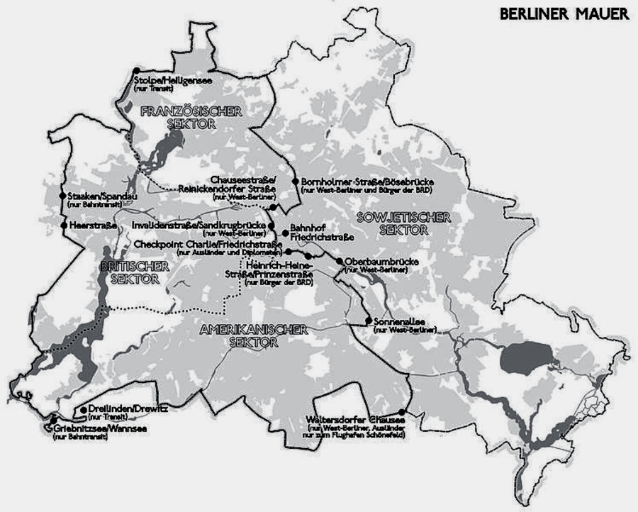
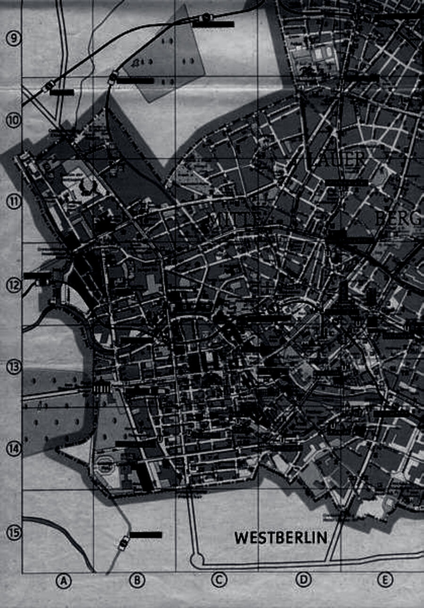
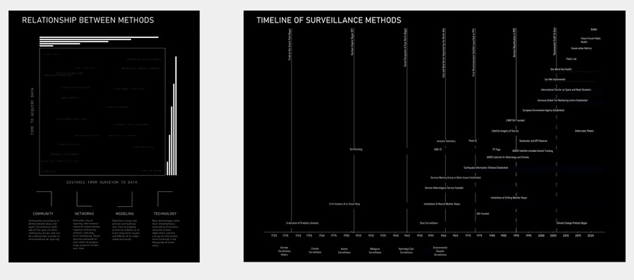

Not only are we surveilled in real time but the data we produce is scoured by machine learning algorithms, looking into our previous behaviors to find predictable patterns and unknown relationships.
ALAR 8010 — Studio Introduction
Surveillance · Landscape
The contemporary human condition is under constant surveillance, through multiplicitous infrastructures that access our interactions — with and without our permission — to produce data that feeds the entertainment, relationships, and logistics of our lives. Concepts such as privacy and autonomy are no longer central to the Western concept of freedom; instead, privacy is obscured as it is wrapped in corporate media platforms and hidden agendas that promise further convenience and connectivity. As spatial designers the studio develops a body of research that articulates this new surveillance state — a state hidden in the recesses of our phones and digital assistants, our traffic cameras and facial recognition, and even in our continual recording of the earth’s surface via satellite imagery and local sensing. The research focuses on the landscape of the contemporary city, diving into the recent history of Berlin to understand how surveillance has played a role in its history and present cultural attitudes. Taught in conjunction with the Greater Berlin Seminar, the studio frames contemporary case studies in surveillance techniques and methods, deploys image analysis to produce mappings of the city, and proposes landscapes explored through singular views of a contemporary or future Berlin.“Our histories and relationships are evolving as we are training and being trained by algorithms that predict our choices, lubricating the mechanisms of the market.”



About the studio
ALAR 8010 Research Studio I is a research studio taught in the Department of Landscape Architecture. The Surveillance State iteration (Fall 2020) engaged the city of Berlin as a case study in surveillance and security — developing a body of research on surveillance techniques and methods, deploying image analysis to produce mappings of the city, and proposing landscapes that are explored through singular views of a contemporary or future Berlin. The research provides a critique of the proposition of the “smart” city through the lens of human experience, examining how nascent technologies provide new experiential platforms while also ushering in regimes for the control of the citizens of the state.
Faculty: Bradley Cantrell (Professor and Chair) and Michael Lee (Reuben M. Rainey Professor in Landscape History). Meeting: Tuesday and Thursday, 12:30–17:00.
The studio relies on a co-learning approach — pushing against the single author to work collaboratively and remotely toward a collective critique (or acknowledgment) of a surveillance-laden, techno-cultural future. This page documents the Fall 2020 Surveillance State iteration, taught in conjunction with the Greater Berlin Seminar (LAR 7500).